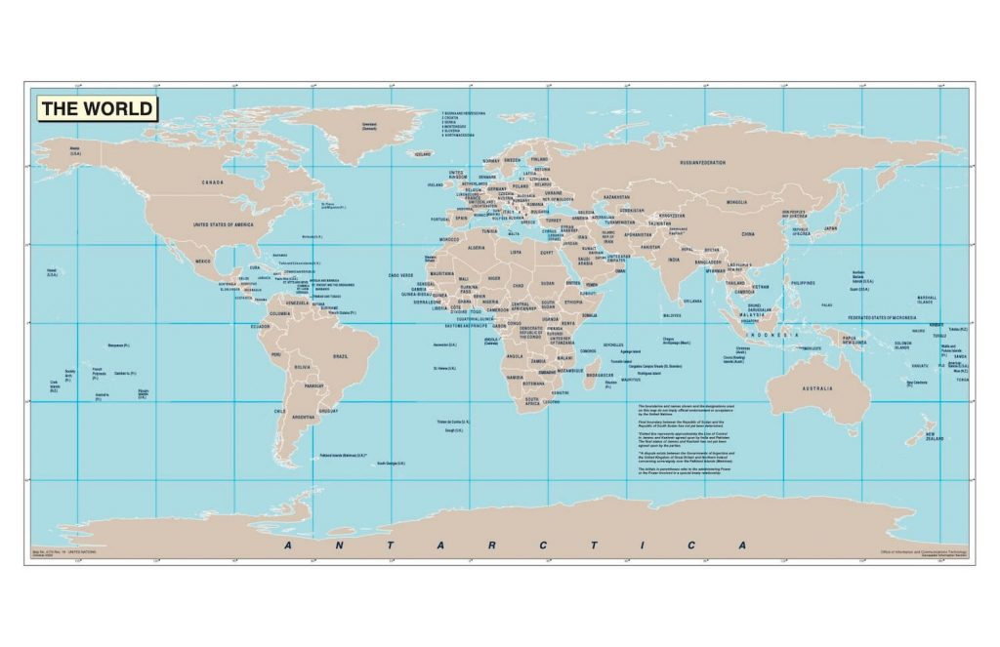
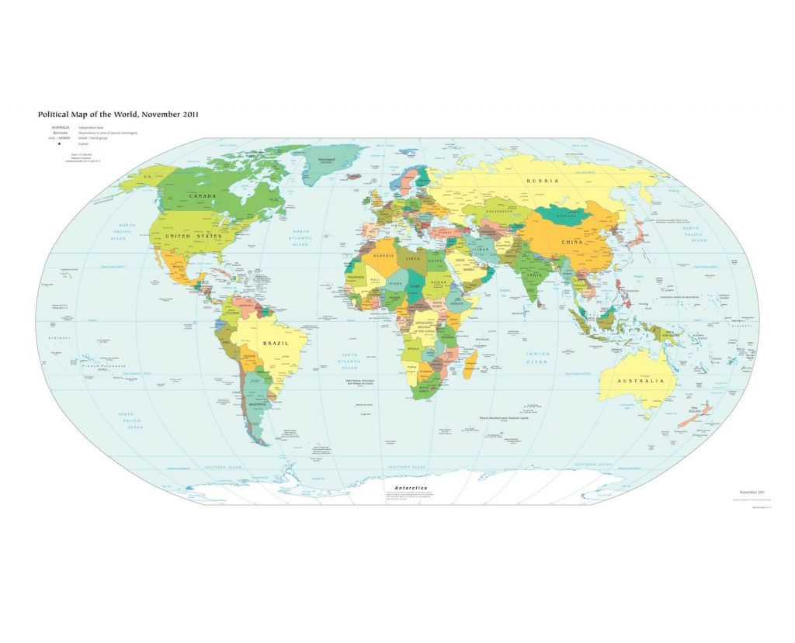
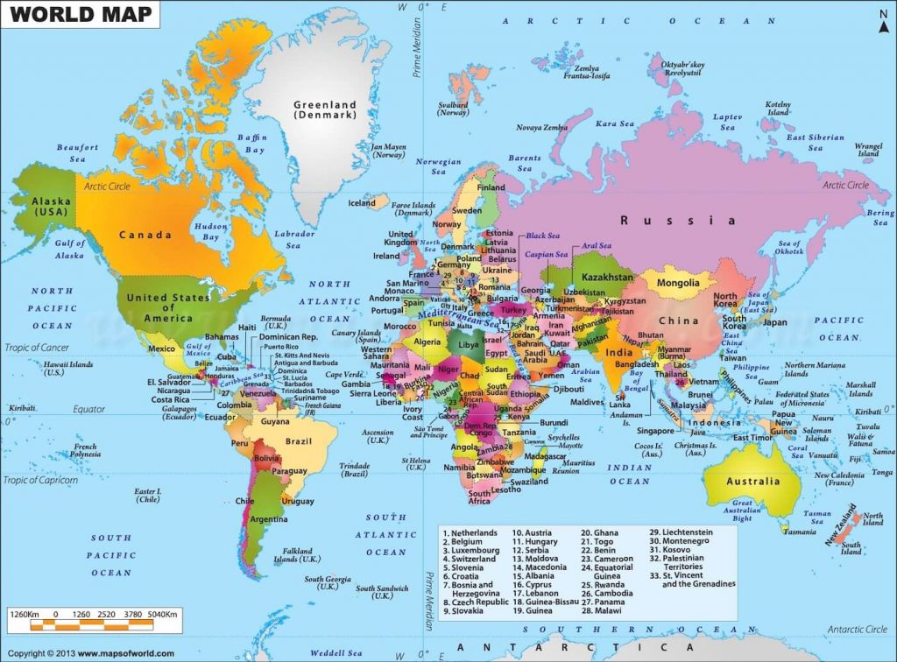
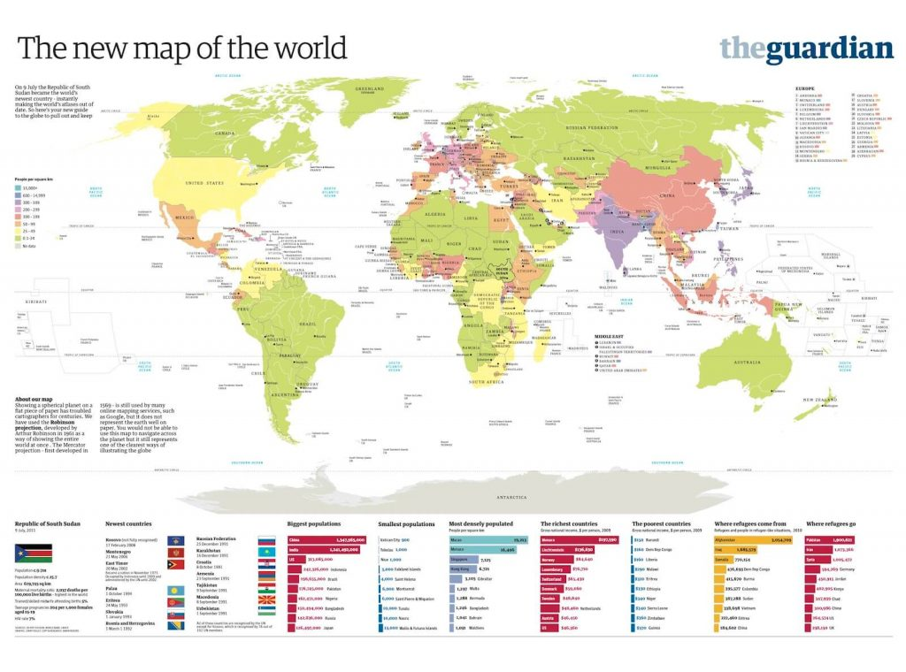

အောက်က ပုံတွေက ကိုယ် download လုပ်မယ့် မြေပုံရဲ့ low resolution screen shot ဖြစ်ပါတယ်။ ဒီပုံတွေက resolution မကောင်းပါဘူး။ High resolution မြေပုံ တွေကတော့ ပုံတစ်ပုံခြင်း အောက်မှာ download link ချပေး ထားပါတယ်။ အဲ့ လင့်ကို ထောက်လိုက်ရင် Google Drive က ပုံကို ရောက်သွား ပါလိမ့်မယ်။ လိုချင်တဲ့ ပုံကို ကိုယ့် ကွန်ပြူတာ မှာ ဖြစ်ဖြစ်၊ ဖုန်းမှာ ဖြစ်ဖြစ် သိမ်းထားလို့ ရပါတယ်။
သတိပြု ရမှာက download လုပ်တဲ့ ပုံတွေဟာ PDF file တွေ ဖြစ်ကြတာပါ။ ဒီ PDF file တွေကို ဖုန်းထဲမှာ သိမ်းထားပြီး ကြည့်နိုင်သလို print out လဲ လုပ်လို့ ရပါတယ်။ ပုံကြီးကိုလဲ ချဲ့ကြည့်လို့ရပြီး ဒီလို ပုံကြီး ချဲ့ကြည့်တဲ့ အတွက် resolution မပျက်သွားပါဘူး။
လွန်ခဲ့သော နှစ်သန်း ၃၀၀ က ကမ္ဘာ့မြေပုံ
ကမ္ဘာမြေပုံ (၁)။ နှစ်ရောင်စပ်

Download
ကမ္ဘာ့မြေပုံ (၂)။ ရောင်စုံမြေပုံ

Download
ကမ္ဘာ့မြေပုံ (၃)။ ရောင်စုံမြေပုံ

Download
ကမ္ဘာမြေပုံ (၄)။ နောက်ဆုံး လွတ်လပ်ရေး ရသော နိုင်ငံများထည့်သွင်း ပြင်ဆင်ပြီး မြေပုံ
၂၀၁၁ ဇူလိုင်လ ၉ ရက်နေ့မှာ ဆူဒန် တောင်ပိုင်း ပြည်နယ်ဟာ လွတ်လပ်ရေး ရရှိခဲ့ ပါတယ်။ လွတ်လပ်ရေး ရလာတဲ့ ဆူဒန်တောင်ပိုင်းဟာ Republic of South Sudan ကို တည်ထောင်ခဲ့ပါတယ်။ Republic of South Sudan တစ်နိုင်ငံ တိုးလာတဲ့ အတွက် မြေပုံ အဟောင်းတွေ ခေတ်မမှီတော့ပါဘူး။ ဒါ့ကြောင့် ကမ္ဘာ့ မြေပုံ အသစ်ကို ပြင်ဆင် ရေးဆွဲဖို့ လိုအပ်လာပါတယ်။ အောက်က မြေပုံကတော့ နောက်ဆုံး လွတ်လပ်ရေး ရလာတဲ့ Republic of South Sudan နိုင်ငံ ဖြည့်စွက်ထားပြီးတဲ့ မြေပုံ ဖြစ်ပါတယ်။
Download